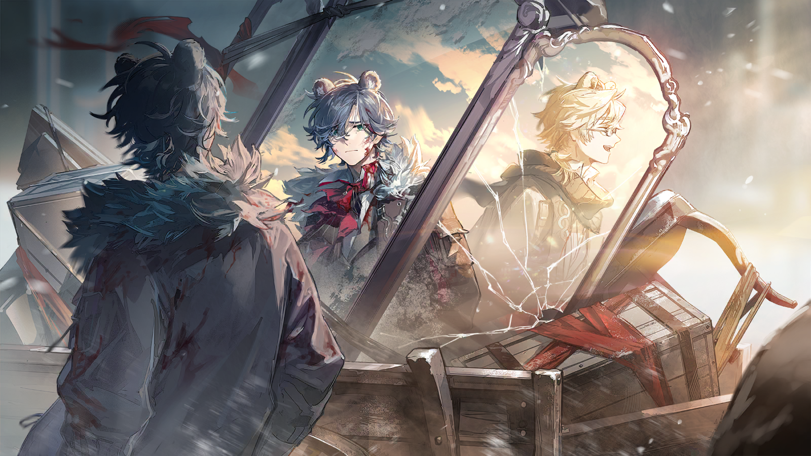
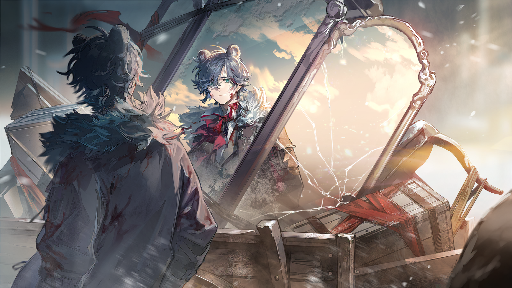

仲裁人
肃静。
仲裁人
诸位，所有证人均已陈述完毕，相信诸位大人已从各方证词中得到了线索。
仲裁人
鉴于“卡托加事件”牵涉甚广，且证词存在诸多矛盾......
仲裁人
仲裁委员会需要时间对所有证据进行“闭门核查”。
仲裁人
现在宣布听证会流程到此结束。两小时后，我们将正式公布“卡托加事件”的最终审议结果。

苦艾
......

苦艾
（压低声音）是时候了。
七嘴八舌的讨论又一次在她四周响起，几位贵族不出所料地与仲裁人同行，走向厅内的过道。
苦艾摇了摇头，穿过熙熙攘攘的人群，走出门时，她回头对上书记官的目光。
书记官面无表情，视线仿佛穿透了她，落在虚无的空气中。但他不动声色地竖起了手中的记录本——
那上面一片雪白，空无一字。
仲裁人
呼......真是场漫长的闹剧。
仲裁人
难以置信，连特里波列夫家的小孩都会犯错。

焦虑的贵族
不过，重点还是在索尼娅身上，仲裁人阁下，您打算怎么定性？
仲裁人
这取决于我们需要她成为什么样的“反面教材”。
焦虑的贵族
我们需要她是一个疯子，阁下。
焦虑的贵族
有的新贵族试图利用皇帝陛下狡辩，连“勤王护驾有功”这种鬼话都讲得出口。
焦虑的贵族
必须得放大索尼娅的危害性，不趁这个机会收拾那些暴发户，将来他们会变本加厉地颠倒黑白！
仲裁人
......等特里波列夫公爵到了再一起决定，他还需要一些时间平复心情。
仲裁人
等等......
仲裁人
这是什么声音？

乌萨斯警察
仲裁人阁下！
仲裁人
发生什么事了？
乌萨斯警察
有消息说，有一群歹徒突袭了三号监狱，劫走了许多犯人。
乌萨斯警察
因为这个事情，刚才大家都吵翻了，需要您来主持秩序。
仲裁人
三号监狱这么随便就被突破了？
乌萨斯警察
我们的警力都集中在这附近，余下的人不够提前发现那些歹徒，才导致了这一失误。
仲裁人
......不对。
仲裁人
外面的学生呢？
乌萨斯警察
他们刚刚都解散回家了，您的意思是......
仲裁人
......
仲裁人
我的意思是，你们这些废物！赶紧找出带头的，把他抓回来！
乌萨斯警察
是！

积极的学生
喂，醒醒！

拉列亚
......你是？
积极的学生
你就是拉列亚吧，这座监狱已经被我们攻占了。
积极的学生
趁他们的援军还没赶到，赶紧离开这里。
拉列亚
我没有弄错吧......你们是来救我的吗？
积极的学生
当然不止是你，你先出来。
惊喜与困意交织，拉列亚顶着发懵的脑袋，一步步地跨过倒在地上的狱警。
他的思绪飘荡，原来自己的威望已然如此......他要回到学生联合大会，成为不亚于奥尔佳的领袖角色。
拉列亚
同学们......我的同胞们！
拉列亚
看着你们，我就知道，自由的火种从未熄灭！
积极的学生
二队！二队把缺口守住！这边的牢房都打开了！
拉列亚
咳咳——
拉列亚
正如你们所见，虽然这漆黑的牢笼禁锢了我的肉体，但它无法禁锢我的——

匆忙的学生
借过！别挡道！
拉列亚
......没关系。
拉列亚
我知道，你们是为了我而来的。为了——
没有一个人回应他......他看着面前眼熟的各个身影，却发觉这群昔日的同学不知何时已经变得陌生。

烈夏
啊啊，累死我了。
烈夏
我刚从那鬼地方跑出来，又要和你们干这一票。

凛冬
别抱怨了，卓娅都没说什么呢。

苦艾
索尼娅，你的想法一直都这么大胆吗？
苦艾
没想到我们居然真的能在那些人的眼皮子底下玩出这套......

真理
卓娅，先前你主动提出要出席听证会拖延时间，我们还担心了好久。
真理
本来娜塔莉娅都找人安排好了，不用让你去冒这么大风险。
苦艾
古米本来也不用全程参与行动的，可她还是来了。

凛冬
哼，说到这个......

古米
凛冬姐——
古米
我已经道过歉啦！而且，我不也没怎么受伤吗？真理姐还说我有帮上忙，你不能再骂我了。

凛冬
谁说我要骂你了？
凛冬
如果不是你和坚雷教官，还有......弑君者，之前闯出封锁区的时候，我们还得分出精力提防来自动力层的袭击。你们确实帮上了忙。

早露
冬将军承认了呀。就像如果不是卓娅主动去听证会把这场戏演足，或许今天也不会有这么顺利的结果。
早露
我们不会把任何人排除在外了。
凛冬
我没有想把她们排除在外......算了，事实证明这确实是我计划上的疏漏。
凛冬
不过我更没想到，再见到你们的时候，外面原本各行其是的学生，已经变成了一支紧密的队伍。
凛冬
也辛苦你了，真理。

真理
还不是因为你太莽撞了，我只能这样......
早露
好啦，索尼娅，安娜，我们都该想想下一步的事了。

古米
啊，对。我们出发之前，坚雷教官说罗德岛准备好了安全屋，让我们结束后不要回办事处，直接过去。

古米
说是要先......“避避风头”？
真理
之后在圣骏堡，我们只能隐秘行动了。所幸学校那边我已经安排好了，接收情报还是没问题的。
凛冬
那就走啊。
真理
嗯。
烈夏
走！
凛冬
哦，等等。
凛冬
卓娅，你是不是忘了什么？
苦艾
什么？
看着凛冬疑惑的目光，她意识到了什么，从包里拿出了一个铁徽章——握紧的拳头的图案，还是崭新的。
凛冬
嗯，你带着呢。之后要好好戴在身上啊。
凛冬
你以前就该是我们的一员，现在和以后，更加得是。

苦艾
凛冬，你们......

烈夏
嘿嘿卓娅，以后可有你受的了。

烈夏
冬将军看起来嘻嘻哈哈，以前自己也不乐意戴这东西。但现在你要是被她逮到几次忘戴徽章，她那个脸色可——

凛冬
......别说了，不是还要避风头吗！
凛冬
这地方七弯八拐的，真不好找。
苦艾
大概是为了保证安全性。

早露
是啊。之前你们在其他城市里活动的时候，卓娅和我每周都要换一个像这样的新据点，才好继续接收情报，准备下一步的行动。
烈夏
反正我是干不了这种活的，换成其他时候，让我在这待两天就得无聊死。
苦艾
其实也没那么枯燥。
真理
是罗莎琳自己坐不住。

烈夏
欸——

弑君者
你们来了。

凛冬
啊。难道这里其实是你的安全屋？
弑君者
就当作是罗德岛的吧。

真理
索尼娅，她是......？
凛冬
弑君者，柳德米拉。她和我们一样，也是圣骏堡办事处的派驻干员。
弑君者
（点头）

早露
......
凛冬
她们看上去都不认识你。看来就算我专门找你说了，你也还是没往心里去啊。
弑君者
罗德岛在乌萨斯的资源尚且有限，最好先留给更需要的人。
弑君者
而且，我找过办事处，古米帮了我。
古米
我觉得那算是互相帮助！
凛冬
好吧。有个开头总比没有好。
弑君者
总之，你们可以在这里待一段时间，等风头过去，坚雷会来通知你们。

古米
嗯？那你呢？
弑君者
我要离开圣骏堡一段时间。
弑君者
正在追踪的任务有了重要进展，我现在必须先尽快去那边核实情况。

弑君者
......
弑君者
......古米......

古米
唔。
弑君者
为什么要跟着我？快回去。
古米
你要去爸爸在通讯里提到的那个地方，对不对？
弑君者
这是我的任务。
古米
可是......
古米
可那里有古米的爸爸。

弑君者
我甚至还没有确定他说的具体是哪个卫星城，跟着我，不一定能见到你父亲。
弑君者
这与任务危险与否无关，只是现在你没有必要——
古米
柳德米拉姐。
弑君者
嗯？
古米
如果你找到了那个卫星城，见到了我爸爸，或者我妈妈，你会告诉我吗？
弑君者
我会。

古米
好。那我还有最后一个问题。
古米
早露姐刚才说，你以前是整合运动的人。

弑君者
她说的是真的。

古米
可是凛冬姐说这不重要，烈夏姐说她本来也不打算和你有什么接触。
古米
真理姐和苦艾姐都沉默了，古米心里也有自己的看法。
弑君者
......
古米
那时候，你不在那里，对不对？
古米
你不在彼得海姆。

弑君者
......
红发的青年女性沉默了。黑暗中，她握紧了双拳，而后又伸展开去。
她望着女孩恳切的双眼，最终缓缓、缓缓地摇了摇头。
弑君者
可我在切尔诺伯格。
弑君者
我曾经是那个整合运动的一员，无论它产生的邪恶是否曾真的经过我的双手，我都需要与它共同承担罪责。
弑君者
逃避毫无用处。因此，我不奢求原谅或是和解。只是现在，这一次，至少这一次......
弑君者
如果我还有挽回些什么的机会，那我一定要去做。
古米睁大了眼睛，似乎在思考着弑君者的发言。很快，她又微笑起来，从口袋里掏出一颗蜂蜜糖。
隔着手套，她把糖塞进弑君者的掌心里。
弑君者
......这是什么——
古米
这是约定。
古米
我明白凛冬姐为什么说不重要了。我们已经长大，长大到即使选择不去迁怒和怨恨，也能获得内心的平静。
古米
我会等你回来，等你带着爸爸的消息，或者妈妈的消息——甚至是他们两个人的消息，回来！
古米
我想相信。我想相信可靠的柳德米拉姐。
安托沙
第二天，我回到了那条街道，一个人。

谨慎的工人
喂喂，注意一下，这可是议员派的活儿，要是磕坏了东西——
兴奋的工人
但是你看到了吗？那个混蛋巴普洛维奇，就是在那片封锁区里被砸成了馅饼。
兴奋的工人
说不定之前，我们人人都踩了一脚他的尸体呢！
谨慎的工人
小点声！这里可不都是我们的人。
兴奋的工人
嗐，怎么可能有别人嘛，我们都在——

安托沙
......
兴奋的工人
您，您是？
安托沙
我是来找人的，不打扰你们工作。如果你担心我会出卖你——

安托沙
巴普洛维奇死有余辜。
安托沙向对方微微鞠躬，他穿过工人们的队伍，走到街道的对面，走向记忆中的门楣。
被学校开除的时候，马特维将身无分文的他带回了家里，那是他自从来到圣骏堡后，第一次有了和家人吃饭的感觉。
他还记得马特维的母亲，总是安静地微笑，搅动着红菜汤里为数不多的肉块，偷偷盛进他的碗中。

安托沙
我......
他抬起头，是熟悉的甜菜与洋葱的味道。
窗帘没有拉严，昏黄的灯光透了出来，他不禁朝着屋里看去。
一位年迈的女士，从狭窄的厨房里捧出了一个陶罐，舀出红菜汤，分到了三个不同的碗里。

安托沙
三份......？！

安托沙
那是留给我的——
安托沙
你在信里到底写了什么......
？？？
嗯？外面有人吗？
听到屋里的声音，他像是最卑劣的窃贼，拿出为马特维所写的讣告，夹在了窗户的边缘，转身逃开。
安托沙
（压低声音）该死！
安托沙
（压低声音）什么时候变得这么软弱了，安托沙！
休息的工人
年轻人，别跑那么急，让一让。
安托沙
......
休息的工人
驮兽有点累了，搬点旧家具也不容易，嘿嘿。
安托沙点点头，他侧过了身子。

安托沙
马特维？！
驮车上的镜子，映着灰暗的街道、狼狈的自己、属于过去的身影。
阳光铺满了马特维的脸庞。他是那么地真实、鲜活，没有不甘的表情和被灰尘沾染的伤口，只是胸膛上插着一束樱桃花......
鲜血的颜色，从花蕊到花瓣，渐渐晕散。
安托沙
是你吗，朋友？
安托沙
我明明看见你，看见利斯特、尤拉......我......
安托沙
我记得每个人的死亡，记得你们每一句祈祷与告别，还有那些没能留下遗言的人。
安托沙
你会告诉我，这一切都是虚假的，对吗？
“马特维”
......不，安托沙。
安托沙
？！
“马特维”
你有没有想象过，我本该会过上的人生。
“马特维”
我还会留在校园里，遇上更多值得交往的朋友，在春天的河流边写下今年的第一首诗。
“马特维”
下午没课的时候，我会回到家里，等着母亲炖好汤，我会念起写给她的文章。
“马特维”
她肯定听不懂，但是会眯起眼睛，笑着和我说：“多吃点，我亲爱的大学生。”
安托沙
啊......
安托沙
马特维，马特维，我......
安托沙
为什么是，我活着......
“马特维”
因为，你还有机会，过上我想过的人生。
“马特维”
放下吧安托沙，我知道，你到底背负着担子走了多少年。
安托沙
过上那样美好的人生......我真的可以吗？
安托沙
......每一个乌萨斯人都可以吗？
过去的身影没有回答，只是轻轻发出一声叹息。

离开故乡后，安托沙第二次流下了眼泪。
他活着，但他的一部分灵魂，永远留在了卡托加区的废墟下。
安托沙
活下去......
安托沙
如果现在放弃了，马特维就永远是帝国贵族口中的叛徒。
安托沙
会有那么一天，我会把他和老师，把无缚者同盟的大家，都刻在属于烈士的石碑上......
安托沙
再给我一些时间吧，我的朋友。
他用满是尘土与污垢的袖子，抹过了自己的眼睛。
随后他抬起步子，跟在了工人队伍的最后。
在这工人队伍的另一头，一个年轻人望着这座陌生的城市，甚至没发觉自己扛在肩上的箱子已滑落于地。
爽朗的工人
喂，兄弟！
爽朗的工人
看什么呢这么认真？也让我们看看。

尼克托
我好像......不，没什么。
爽朗的工人
你来我们这里也几天了，别那么拘谨嘛，开心点，我们都进圣骏堡啦。

尼克托
圣骏堡......

尼克托
你说得没错，到圣骏堡的这一路，可真是难熬......
天光逐渐消散，像是拉上了帷幕。

紧张的军官
元帅把我们召集到这里，又是要做什么？
紧张的军官
难道因为那小子遇刺，砍了他所有亲卫的脑袋都不够，还要追责到我们头上来吗？
严肃的军官
也可能是你想多了，只是又有预料外的紧急情况。
严肃的军官
毕竟，即使半个月前军中爆发了小规模叛乱，从整体战况来看，第四集团军仍然与第二集团军相持不下。
紧张的军官
你的意思是？
严肃的军官
只是猜测，但或许，我们也没法再独善其身了。
紧张的军官
可第一集团军向来都是——
威严的军人
向来都是？
紧张的军官
......向来都是独、独立于派系之外的编制。我们不主动参与任何斗争，只维护乌萨斯的利益。
威严的军人
没错。
威严的军人
既然是这样，各位又在忧心什么呢？
严肃的军官
请恕我直言，总司令。您突然将我们从各自的驻地召集至此，一定有足够重要的缘由。
威严的军人
当然。
严肃的军官
那么这个缘由是......？
威严的军人
我们的新型武器已经通过了理论测算阶段，可以投放试验。
威严的军人
我需要各军团配合，“悄无声息”地完成这场试爆。